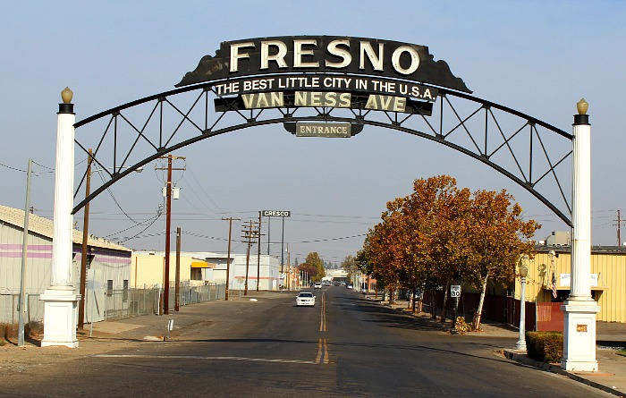
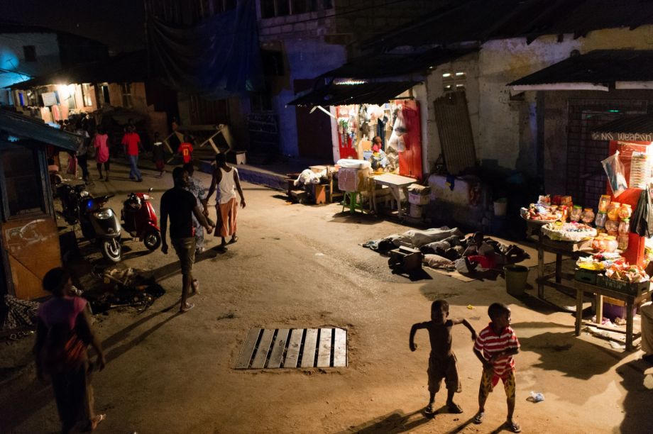
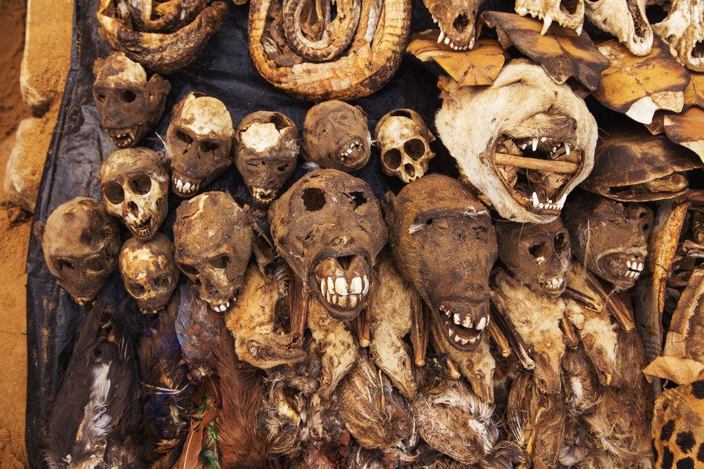
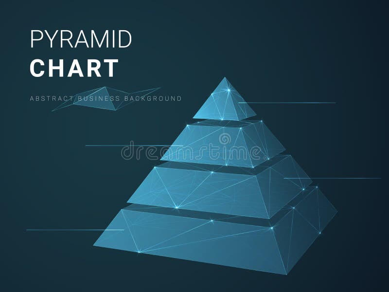

You are looking at the leaf node of the scam hierarchy.
Here, on the corners of Van Ness and Fulton, Fern and Moroa, the ones who stand outside are not the ones who design the machine. They move the product. They take the risk. They catch the cases. Higher up the chain—suppliers, protectors, the ones who never touch the bag—those are the ones who stay rich. Politicians who look the other way. The ones who extract without ever standing on the corner.
There, across an ocean and a different set of gods, the same structure operates under different names. The Sakawa boys of Ghana (and their Nigerian Yahoo cousins) sit in internet cafés or rented rooms, typing love letters and business proposals to strangers who will never see their faces. But the real power does not live in the keyboard. It lives with the fetish priests, the mallams, the juju men who sell the rituals that “open the way.” Sleeping in coffins. Blood. Charms. The spiritual service fee. The leaf node pays upward for the magic that is supposed to hypnotize the victim. The priest stays paid whether the scam lands or not.

Here: The Poison on the Corner
Counterfeit M30s. Blue pills stamped to look like oxycodone. Inside them: fentanyl in inconsistent doses. Some kill on the first try. The dealers on the street are the last link. They did not invent the molecule. They did not cross the border with the powder. They did not press the pills. They stand where the demand is, in the neighborhoods where the money is thin and the despair is thick.
When someone dies from the product, the leaf node catches the heat. The higher nodes—cartels, regional distributors, the quiet money—reorganize and keep moving. The street corner is the risk surface. The leaf is what gets pruned when the tree needs to look clean for a while.
Local observation holds: in certain zones of Fresno, the only consistent cash flows that look like “success” without a formal job come from the drug trade or from the political class that benefits from the chaos staying managed rather than solved. That is not a conspiracy theory. It is pattern recognition about who extracts and who absorbs the cost.
There: The Witch Doctor’s Cut
Sakawa is a Ghanaian term, from Hausa roots meaning roughly “putting inside” or the method of making money. It describes internet fraud fused with traditional spiritual technology. The boys—mostly young, mostly male, mostly from neighborhoods with no realistic formal ladder—perform the scams. Romance. Business opportunity. Inheritance locked behind fees. The same scripts that once came from Nigerian 419 operations evolved into a local subculture complete with films, fashion, and public flaunting of sudden wealth.
The spiritual component is not optional theater for many of them. Fetish priests and juju practitioners sell rituals designed to “spiritually possess” or compel the distant victim. Reports and research document the range: animal sacrifice, sleeping in coffins, charms, powders, and darker rumors of human elements. The priest extracts payment for the service. Success or failure of the individual scam still leaves the priest paid. The boy is the one who risks exposure, community stigma, or the spiritual debt he believes he has incurred.
The hierarchy is visible once you stop looking only at the keyboard. The leaf node is the scammer on the screen. The higher node is the religious specialist who converts belief into cash and keeps the system supplied with new aspirants who think the power is real.


The Shared Architecture
Both systems run on the same abstract machine.
- A high-margin product or service that destroys the end user or the community (poison pills; engineered trust theft).
- Disposable operators who absorb legal, physical, and social risk.
- Higher nodes that extract fees, protection, or spiritual rents without standing in the same danger.
- A cultural story that makes the destruction feel like destiny, hustle, or justice.
In Fresno the product is chemical. In Accra and related networks the product is psychological and spiritual. In both places the leaf node can die—by overdose of the product he sells, by violence from competitors, by ritual escalation that demands more and more, or by the slow spiritual and social corrosion that follows when the money finally stops.
The parallel is not that every person from a given ethnicity is a criminal. The parallel is that certain criminal ecosystems, when they mature, develop the same internal class structure: a priesthood of extractors and a base of expendable operators. The ethnicity of the operators is secondary to the structure. The structure travels.

False Moral High Ground
Here is where the devil, proverbially speaking, collects the largest dividend.
Some Sakawa practitioners and their defenders frame the fraud as digital reparations—payback for colonial extraction, for the forts that still stand on the Ghanaian coast, for gold and bodies taken centuries ago. The language sounds like justice. It functions as permission. It converts theft into resistance theater. The money still flows to the same higher nodes. The victims (often lonely or elderly Westerners) are not the descendants of the specific colonial administrators. The ritual economy does not redistribute to the descendants of the enslaved. It enriches the contemporary extractors who learned to speak the language of historical grievance.
Parallel language appears around the drug trade in American cities: the street is the only economy left; the system never gave them a chance; survival justifies the product. The rhetoric is not always wrong about the structural poverty. It is almost always wrong about the moral arithmetic. The product still kills. The hierarchy still extracts. The leaf nodes still absorb the body count and the prison time while the higher nodes buy property and political influence.
False moral high ground is the solvent that dissolves ordinary restraint. Once the crime is recast as justice, the revenue belongs to the forces that destroy rather than the forces that build. The proverbial devil does not need to invent new sins. He only needs to supply a sufficiently noble-sounding story for the old ones.
Closing
The observation that began this piece is correct in its structural diagnosis: you are looking at the leaf node. The ethnicity or the nationality of the operators is the surface. The hierarchy is the constant. Witch-doctor cultures that monetize spiritual fear, and cartel cultures that monetize chemical dependence, both produce the same outcome for the people at the bottom of their own systems and for the strangers those systems target.
Naming the pattern does not require hating an entire people. It requires refusing the sentimental fog that pretends every criminal ecosystem is merely “poverty” or “colonial trauma” with no agency left inside it. Agency exists at every node. The higher nodes choose extraction. The leaf nodes choose, under constraint, to accept the risk surface. The rest of us choose whether to keep feeding the moral language that makes the whole machine feel righteous.
The forces of good do not need the revenue that travels through these channels. They need the channels closed and the stories that keep them open retired.
Selected Sources
- Wikipedia & contemporary reporting on Sakawa (Ghanaian cyberfraud + traditional ritual fusion)
- BBC, “Inside the world of Ghana’s internet fraudsters” (2015) and later academic work on techno-spiritualism
- Oduro-Frimpong, Joseph et al. research on Sakawa rituals and Ghanaian popular video
- Federal prosecutions and Fresno Bee reporting on M30/fentanyl distribution networks in Fresno County (Operation Killer High and related cases)
- Criminological literature on “Yahoo Boys,” hustle kingdoms, and juju oaths in West African cybercrime (2020s)
- Local street-level observation of Fresno Tower District commerce patterns
This piece is narrative and structural analysis, not a claim of collective ethnic guilt. Patterns in criminal ecosystems are real. Individuals remain responsible for their choices inside those ecosystems.